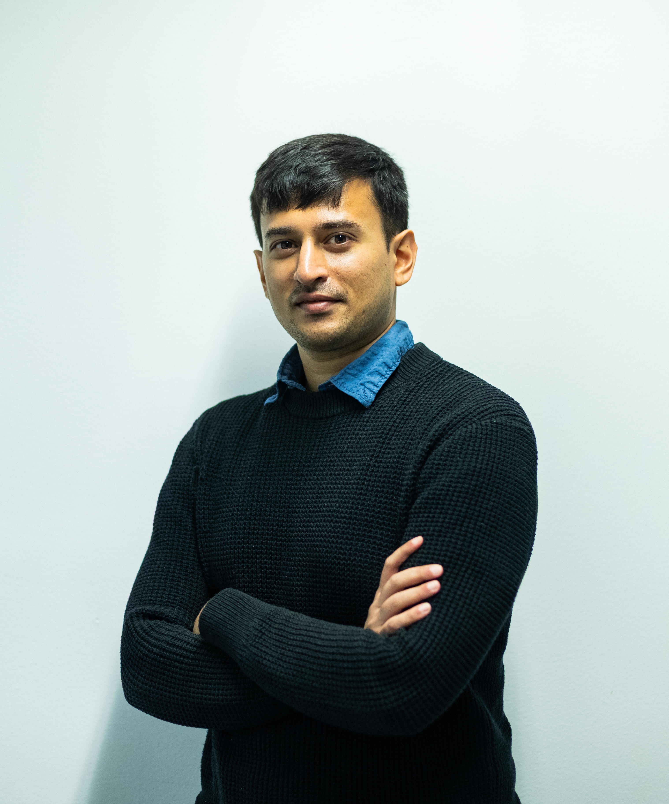

Welcome, namaste, aadaab! I am a researcher investigating the governance and politicisation of international development and aid. I focus on multilateral development banks (especially the China-created Asian Infrastructure Investment Bank) and public officialdom in the developing world. I am experienced in both quantitative and qualitative methods, and offer clients advice on every step of a research paper's lifescycle: conceptualisation, training interviewers and organising logistics, on-ground surveying, data collection and analysis, research writing, publication, opinion writing, podcasting, and video creation. My previous clients include CPC Analytics, a Berlin-based policy firm, which engaged me for a survey experiment being conducted in India.
I am also a part-journalist/filmmaker, mainly documenting how the Partition of India in 1947 continues to shape politics in South Asia today. I hold degrees in public policy (Masters, Hertie School, Germany), law (Bachelors, Government Law College, Mumbai), and engineering (Bachelors, SPPU, Pune), as well as an advanced diploma in Spanish Studies (SPPU, Pune). I previously wrote for the The Indian Express, in New Delhi, India.
Email: o.marathe@alumni.hertie-school.org
Address: Cantianstraße 7, Berlin, 10437
LinkedIn: Om Marathe

Description: If an investment project is to be built, would voters prefer that the local government or a multilateral development bank (MDB) fund it? Do voters prefer one bank over another, and if so, why? We examine these questions through in-person survey evidence from 2,572 individuals living in four Indian cities. When the bank's location is included, there is a significant drop in trust, approval, and positive perceptions for AIIB funding, but not for World Bank funding. This suggests that preconceived notions about countries—and about China in particular—play a significant role in shaping public opinion.